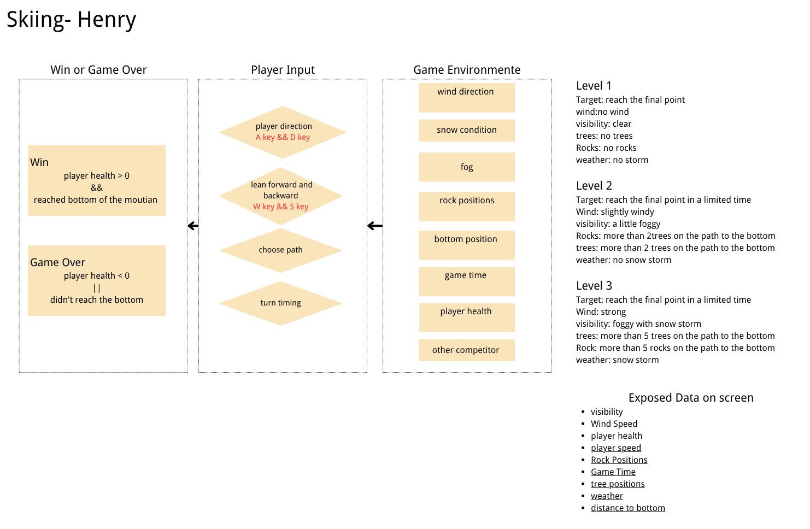

System Design
System Graph

The system graph shows how environment data, player-controlled data, and system-calculated results connect to form the observe → judge → act → feedback → adjust loop.
Environment Data (per level)
| Variable | Level 1 | Level 2 | Level 3 |
|---|---|---|---|
| Fog | 0 | Light | Heavy |
| Wind | None | Light → | Strong → |
| Snowstorm | No | No | Yes |
| Rocks | 0 | 2 | 5 |
| Trees | 0 | 3 | 5 |
| Time Limit | None | 60s | 45s |
Player-Controlled Data
- A/D — Carve left/right (changes steer angle, creates S-turn drag)
- W — Lean forward (increases speed)
- S — Lean backward (decreases speed)
- Space — Jump (clears trees, blocked by rocks)
- Route choice — steering direction determines which obstacles you encounter
System-Calculated Results
- Speed = gravity + lean − carve drag − friction + wind
- Health = max − collision damage (rock: 30, tree: 15)
- Screen shake = intensity when speed > 60% (feedback: slow down)
- Crash = automatic when speed > 90% (no S-turns = death)
- Stop timeout = 5 seconds at zero speed = game over
Success & Failure
Win: reach the bottom of the slope with health > 0.
Lose: health ≤ 0, 5-second complete stop, speed crash, or time-out.